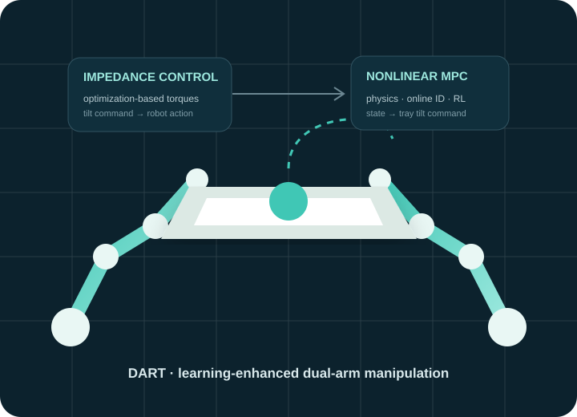
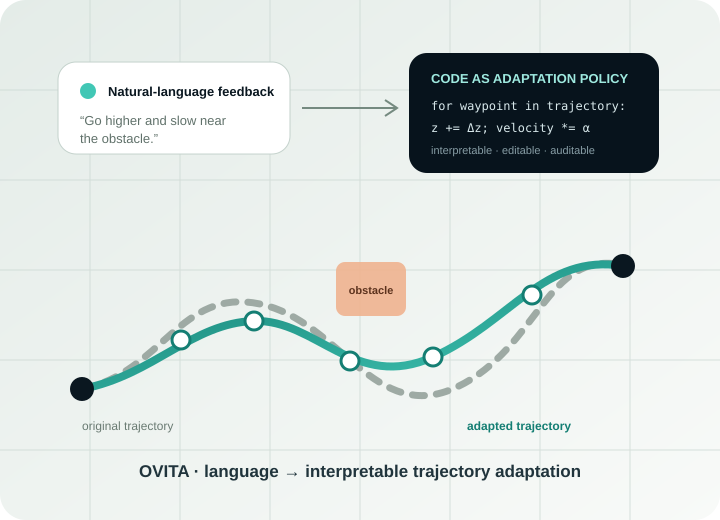
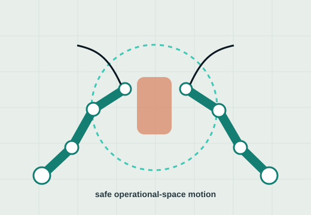
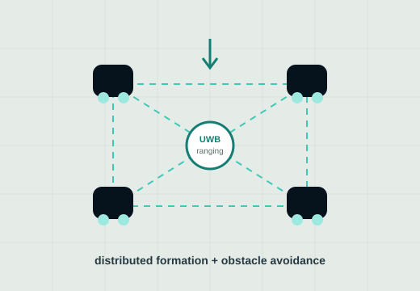

Dual-arm manipulation
Coordinated bi-manual manipulation, non-prehensile transport, contact-rich tasks, and closed-chain execution.
Bi-manualContact7-DoF
AI & Robotics Researcher
I build learning-enabled robot systems at the intersection of manipulation, planning, control, and human–robot interaction—with an emphasis on physical feasibility, safety, and interpretability.
Dual-arm manipulation · Safe reactive planning · Learning-enhanced MPC · Language-guided robot adaptation
Research
Research direction
I am an M.S. by Research student in Computer Science & Engineering at IIIT Hyderabad, associated with the Robotics Research Center (RRC) under the guidance of Prof. K. Madhava Krishna.
My work focuses on robot autonomy in settings where contact, model mismatch, collision constraints, and real-time execution matter. I am especially interested in combining model-based structure with learning—using optimization and control as a backbone while allowing learned models or language interfaces to improve adaptation and generalization.
Coordinated bi-manual manipulation, non-prehensile transport, contact-rich tasks, and closed-chain execution.
Reactive operational-space motion under self-collision, inter-arm collision, obstacles, limits, and runtime constraints.
MPC and operational-space control augmented with online identification, learned dynamics, and reinforcement learning.
Open-vocabulary, auditable interfaces for translating user intent into meaningful robot trajectory adaptations.
Selected work
Featured research
Projects that best represent my current research trajectory—from model-based control and dual-arm manipulation to language-guided robot adaptation.

Learning-Enhanced Model Predictive Control for Dual-Arm Non-Prehensile Manipulation
DART integrates nonlinear MPC with an optimization-based impedance controller for controlling an object on a dynamically manipulated tray. The framework compares analytical, online-regression, and reinforcement-learning models of tray–object dynamics.
Open-Vocabulary Interpretable Trajectory Adaptations
An interpretable language-driven framework that uses large language models to generate code as an adaptation policy, enabling non-expert users to modify robot trajectories from planners or demonstrations without task-specific training.


Operational-space motion generation for coordinated 7-DoF manipulators with self-, inter-arm-, and obstacle-collision avoidance.

Distributed formation and obstacle avoidance combining multi-agent reinforcement learning with cooperative UWB ranging.
Publications
Research output
A compact publication list optimized for fast academic scanning, with direct links to papers, project pages, and code.
Autrio Das, Shreya Bollimuntha, Madala Venkata Renu Jeevesh, Keshab Patra, Tashmoy Ghosh, Nagamanikandan Govindan, Arun Kumar Singh, K. Madhava Krishna
Anurag Maurya, Tashmoy Ghosh, Anh Nguyen, Ravi Prakash
Anurag Maurya, Tashmoy Ghosh, Ravi Prakash
Tashmoy Ghosh
Experience
Path so far
Research in dual-arm manipulation, safe reactive planning, learning-enhanced control, and robotics systems.
Developed open-vocabulary, language-guided trajectory adaptation across heterogeneous robotic platforms, culminating in OVITA.
Worked on MAPPO-based obstacle avoidance and UWB-based distributed formation/localization with simulation and TurtleBot3 hardware.
Built a foundation across embedded systems, robotics, machine learning, computer vision, and signal processing.
Tools I use to move from formulation to simulation and robot execution.
05 · Contact
For research collaborations, academic discussions, or opportunities related to robot learning, manipulation, planning, and control.